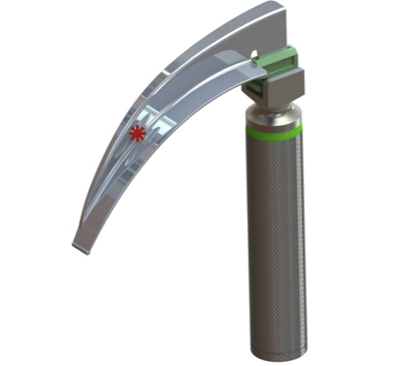
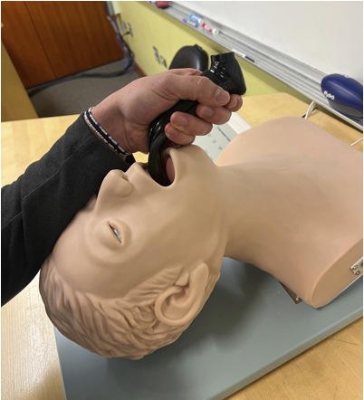
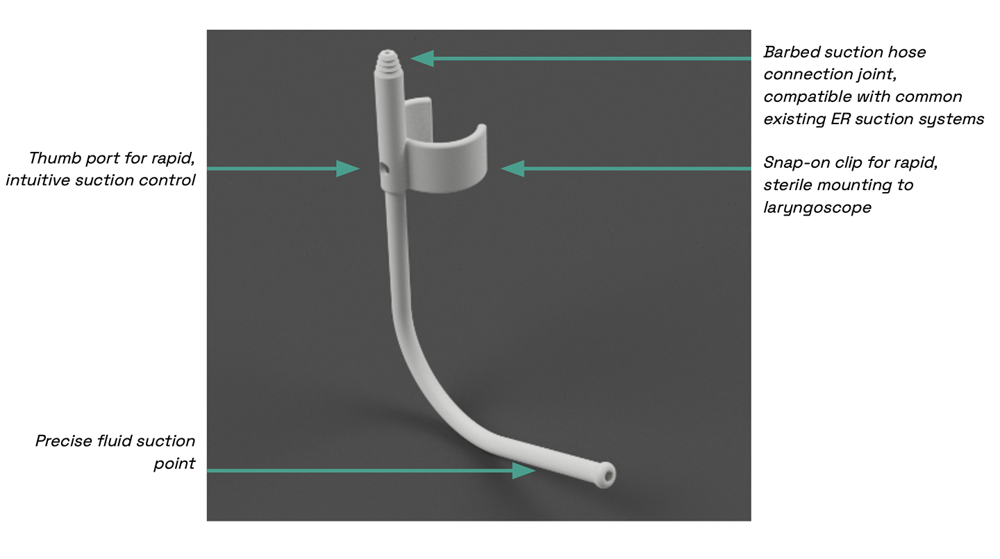
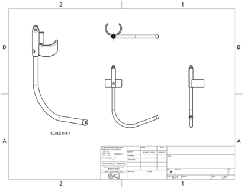
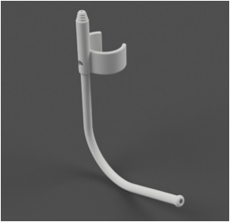
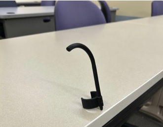

Lifesaving—but Broken—Technology
One of the top physician priorities upon a patient arriving in the emergency room is to secure their airway. This is often done through endotracheal intubation, a procedure in which a tube is inserted into the patient's trachea using a tool called a laryngoscope.
If the laryngoscope is used incorrectly or the intubation fails, the patient may experience negative symptoms upon regaining consciousness, including:
- Inflammation
- Angioedema (local swelling in the throat)
- Soreness
Modern laryngoscopes use a camera to provide a video feed of the patient's airway, allowing the physician to see directly where to place the tube. However, fluids like blood, saliva, and vomit can obscure the camera lens, making it difficult to see the airway and increasing the risk of intubation failure.

Laryngoscope (* = location of camera for video laryngoscopy)

Design study practicing video laryngoscopy on a mannequin
Saving Critical Seconds
Discussing this issue with practicing physicians and anesthesiologists revealed the critical features of the solution. The design must:
- Save the time it takes to call in an extra pair of hands to apply suction.
- Reduce the average overall attempts necessary to intubate.
- Integrate cleanly into existing ER product ecosystems.
The SnapVac

See the full project poster here.
My Contributions
Complete Physical Product Design
I translated physician feedback and secondary research into a safe, reliable, and disposable prototype.

CAD & Rendering
To prepare for the research expo at which the SnapVac was presented, I prepared CAD designs and renders representing the SnapVac from several views that mirror how physicians would use the product.

Prototype Fabrication
I 3D printed several copies of the prototype using PLA, which I chose for its biocompatibility, biodegradability, and cost, given that the SnapVac is a disposable tool.
